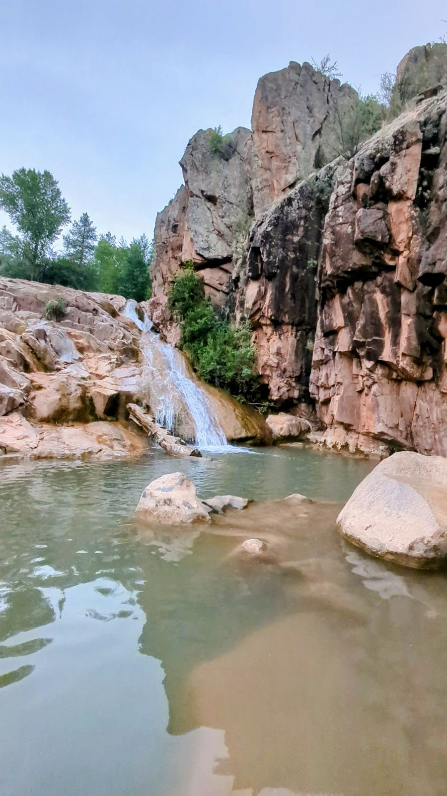

The surprise of a Sedona trip: twenty minutes from the red rocks, a real river runs green and cool through cottonwood forest. The Classic River Run is a guided paddle down the Verde River in stable inflatable kayaks — gentle current, small riffles, herons and bald eagles overhead, and swimming holes when the day is warm.
It's rated a perfect 5.0 across nearly 700 reviews, and it works for first-time paddlers: the guides run the safety talk, the boats are forgiving, and the river does most of the work.